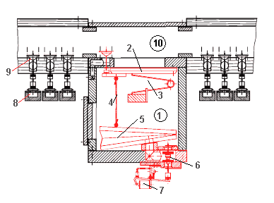

Stejnì jako tónové ventily i systém registrace ve vzdušnici mùže být ovládán kombinovanì. V takovém pøípadì hovoøíme o smíšené rejstøíkové traktuøe. Princip funkce obou traktur (hrací i rejstøíkové) je velmi podobný. Nejèastìjší kombinací je použití elektropneumatické traktury. Filosofie je shodná, jako u tónové traktury - ovládaní od hracího stolu je elektrické, pod vzdušnicí je elektropneumatické relé, které pøevede elektrický signál na pneumatický a ten ovládá registraci stlaèeným vzduchem (vzhledem k vìtším rozmìrùm rejstøíkových ventilù èi síle, nutné k pøesouvání zásuvek se používají témìø výhradnì vìtší klínové míšky). Na následujících obrázcích je øez kuželkovou vzdušnicí ve dvou rùzných uspoøádáních rejstøíkové ventilové komory ve vzduchovodu (na prvním je komora pod vzdušnicí, na druhém nad ní). Elektropneumatická rejtøíková traktura je na nich zvýraznìna èervenì: |

Funkce traktury je obdobná jako u tónové. Ve vzduchovodu
(ventilové komoøe 1) je klapkový rejstøíkový ventil (2), udržovaný v klidové,
zavøené poloze pružinou (3). Ventil je spojen tahacím drátem (4) s horní
deskou výpustného (vyprázdòovaného) míšku (5). Míšek je propojen s prostorem
ventilové komory ventilem s kontraventilem, jehož kuželka (6) je nadzdvihávána
páèkou elektromagnetu (7). Pøi sepnutí elektromagnetu tento ventil vypustí
vzduch z míšku, ten splaskne, otevøe klapkový ventil (2) a vpustí vzduch
z ventilové komory do rejstøíkové kancely (10). Pozice (8) nákresu pøedstavuje
kondukt s míšky a kuželkami (9) jednotlivých tónù. |
Obdobné je i uspoøádání na tomto nákresu. Ve vzduchovodu
(ventilové komoøe 1) jsou kuželkové ventily (2). Ty leží na horní desce
míšku (3), do nìhož je vzduch vpouštìn ventilem 4 z pomocného vzduchového
kanálku 5 (relé). Tento ventil je otevírán páèkou elektromagnetu (6).
Po jeho sepnutí se vpustí vzduch do míšku, ten se nadme a nadzvedne kuželky
(2) a otevøe tak pøívod vzduchu z ventilové komory (1) do rejstøíkové
kancely (9). Pozice (7) je opìt kondukt s míšky a (8) kuželka tónového
ventilu ve vzdušnici. |
Další bìžnou kombinací traktur je elektromechanická
rejstøíková traktura. K mechanické traktuøe registrace je v nìkterém
bodì pøipojeno pøídavné elektromagnetické ovládání (nejèastìji pomocí
tažných elektromagnetù). Registraci je tak možno ovládat jak mechanicky
(vytažením manubria na hracím stole) nebo elektricky (sklopkou napø. na
druhém, vzdáleném stole nebo pomocí logiky volných kombinací a kolektivù,
crescenda èi registraèního poèítaèe viz. napø. varhany u sv.
Ducha v Opavì). |
Jak pøi ruèním, tak i pøi elektromagnetickém ovládání je v pohybu celá traktura, díky posunu manubrií na hracím stole a jejich výsledné poloze má varhaník stále pøehled o aktuální registraci v té nejnázornìjší podobì (obdobnì jako u "Setzer" sklopek v elektrické traktuøe registrace). Výhodou tohoto øešení je volitelná nezávislost obou systémù registrace (buï lze registrovat souèasnì ruènì i elektromagneticky - napø. k navolené volné kombinaci pøidat pøi høe další rejstøík ruènì nebo jsou volné kombinace ruènímu ovládání nadøazeny). Lze jej vìtšinou dostavìt i i do starších varhan bez nutnosti velkých a nevratných zásahù do traktury (památkové hledisko zachování starých nástrojù v pokud možno nejpùvodnìjším stavu) a vybavit je tak chybìjícími pomocnými zaøízeními (u varhan se zásuvkovou vzdušnicí a mechanickou rejstøíkovou trakturou vìtšinou chybí kombinace i kolektivy, èistì mechanickou cestou bez doplnìní o pneumatické èi elektromagnetické ovládání je nelze realizovat - nejde jedním ovládacím prvkem najednou mechanicky pøestavit celou øadu zásuvek). Další výhodou je zachování plné funkènosti registrace (a tím i varhan jako celku) i když elektromagnetické ovládání nebude èi nemùže být použito (dùvodù mùže být celá øada - výpadek napájecí sítì, porucha registraèního poèítaèe nebo varhaník nechce používat elektroniku a registruje radìji ruènì). |
Na souvisejících stránkách jsou popsány nejèastìji
používané komponenty kombinované
traktury, tónová traktura. |
Poznámka: Tato stránka je souèástí Anatomie varhan ®, © Ing. Petr Bernat. Všechny animace © Konrad Zacharski